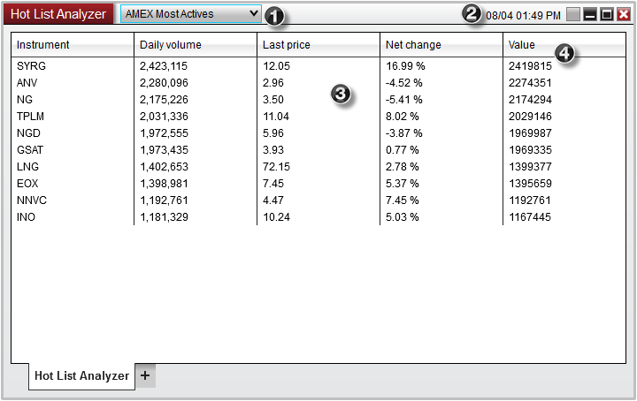
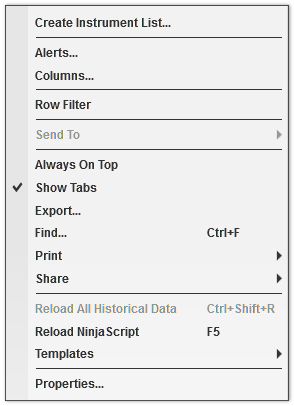

|
<< Click to Display Table of Contents >> Using the Hot List Analyzer |


|
Using the Hot List Analyzer
|
<< Click to Display Table of Contents >> Using the Hot List Analyzer |
|
What are hot lists?Hot lists are a unique list of stocks which are constantly being monitored and updated by your data provider. These lists will give you valuable information which meet a specific criteria. For example, if you wanted to know which stocks trading on the NYSE had the highest amount of volume today, you could select the "NYSE Most Actives" hot list. Who can I use hot lists with?Hot lists can be used with the following data providers:
•Interactive Brokers •TD AMERITRADE What type of hot lists are there?Hot lists are not hard coded into NinjaTrader and the type of lists that are available will vary depending on your data provider and are subjected to change. NinjaTrader's Hot list selector will display all current available hot lists from your provider. If you would like to know what types of hot lists you can get with your data provider, the best way to determine this information is to establish a connection to the data provider and browse the Hot List Selector on the title bar of the Hot List Analyzer. |
 Understanding the Hot List Analyzer Display
Understanding the Hot List Analyzer Display
Display Overview
Right Click Menu
|
 Hot List Analyzer vs Market Analyzer
Hot List Analyzer vs Market Analyzer
What are the differences between the Hot List Analyzer and Market Analyzer?The primary difference between the Hot List Analyzer and the Market Analyzer is that while the Market Analyzer allows you custom create rows of Instruments, the Hot List Analyzer does not. Any instruments that are added to the Hot List Analyzer are dynamically added based on the Hot List you have selected. The Hot List Analyzer also does not allow you to remove instruments from the current display.
Creating and customizing an Instrument ListIf you would like to further customize a list of instruments based off a hot list you have displayed, you can create a custom list of instruments by right clicking on the Hot List Analyzer display and selecting Create Instrument List. Once the Instrument List has been created, you can open the Instrument List window to customize the list of instruments. You can also add the Instrument List to the Market Analyzer for run analysis on your custom hot list. |